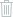

<ng-container *ngIf="isDataAvailable">
  <div id="contact-type-wrapper">
    <p [ngClass]="{ selected: allContacts }" (click)="switchContactType(true)">
      All contacts
    </p>
    <span>|</span>
    <p
      [ngClass]="{ selected: !allContacts }"
      (click)="switchContactType(false)"
    >
      My favorites
    </p>
  </div>

  <div id="search-wrapper">
    <input type="text" />
  </div>

  <div id="contacts-wrapper">
    <div *ngIf="allContacts" id="add-contact">
      <div>
        
        <p>Add new</p>
      </div>
    </div>

    <div class="contact" *ngFor="let contact of contacts">
      <div class="icons-wrapper">
        
        
        
        
      </div>

      <a [routerLink]="['detail/' + contact.id]">
        
        <p>{{ contact.name }}</p>
      </a>
    </div>
  </div>
</ng-container>
